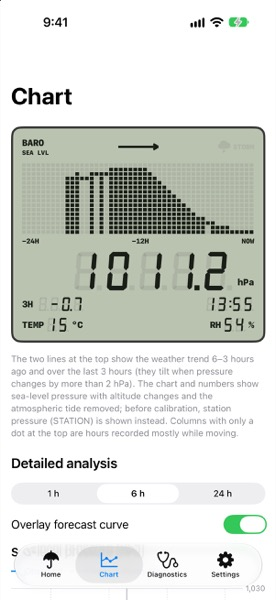
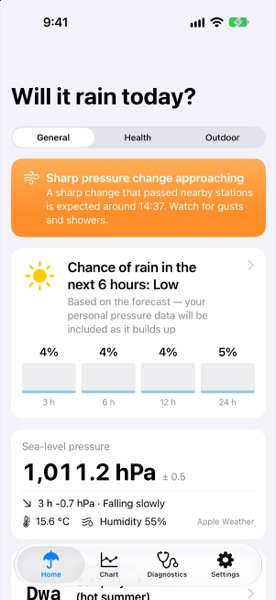
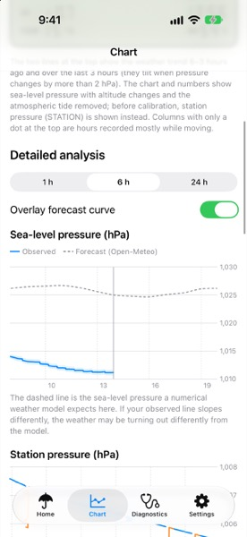
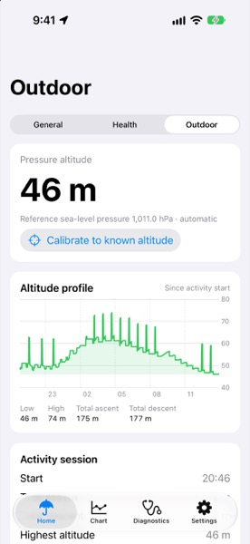
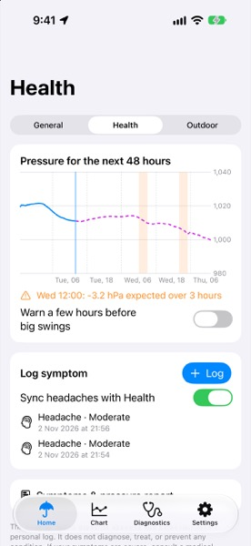
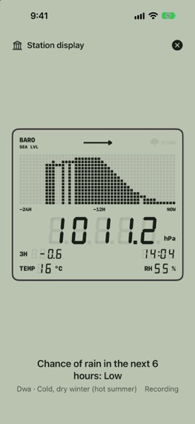
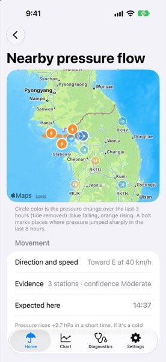
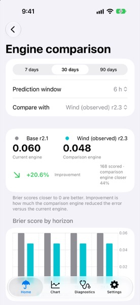
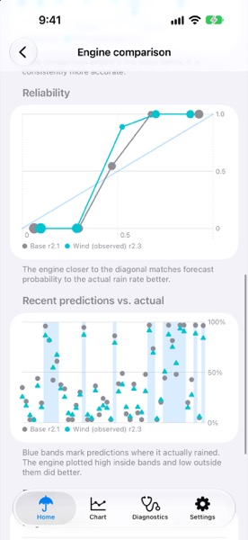

홈 화면
홈 화면에 두는
작은 기상대.
LCD 기압계나 강수 전망 위젯을 홈 화면에 추가하세요. 기압과 변화 추세, 확인 가능한 날씨 정보를 함께 보여줍니다.
기압 관측부터 강수 전망까지
iPhone의 기압계로 날씨의 변화를 기록하세요. 비가 올 가능성부터 산행 중 고도까지, 일상에 필요한 정보를 한곳에서 확인할 수 있습니다.
App Store 출시 예정
iPhone · iPad · Apple Watch



기상대 앱의 실제 화면입니다.
기압계가 내장된 iPhone이나 iPad로 현재 기압을 재고, 시간에 따른 변화를 기록하세요.
직접 잰 기압에 주변 관측소의 자료와 날씨 예보를 더해 강수 가능성을 살펴봅니다.
외출 전에는 비 소식을, 산행 중에는 고도를. 그때그때 필요한 정보를 골라보세요.
일상 · 야외 · 건강
외출 전 날씨를 확인하고, 산행을 기록하고, 기압과 증상을 함께 살펴보세요. 용도에 따라 세 가지 화면을 바꿔 쓸 수 있습니다.
오늘의 날씨
앞으로 3·6·12·24시간 안에 비가 올 가능성을 확인하세요. 현재 기압과 기온, 습도도 한 화면에서 볼 수 있습니다.
어떤 관측 자료와 예보를 참고했는지, 예측 근거에서 확인할 수 있습니다.
기압이 급격히 떨어질 때나 외출 전에 알림을 받아보세요. 곧 비가 온다는 분 단위 알림은 Apple 날씨가 지원하는 지역에서만 받을 수 있습니다.
산행과 야외 활동
기압으로 고도를 계산하고, 시간에 따른 고도 변화를 그래프로 보여줍니다. 활동을 시작하면 누적 상승·하강 높이도 기록할 수 있습니다.
현재 위치의 고도나 해면기압을 알고 있다면, 그 값을 입력해 고도계를 보정하세요.
기압 변화와 산악 날씨 관련 신호를 활동 기록과 함께 살펴보세요. 산행 전에는 공식 예보와 현장 상황을 꼭 확인하세요.

증상과 기압 기록
지난 24시간 동안 관측한 기압과 앞으로 48시간의 예보 기압을 증상 기록과 나란히 놓고 살펴보세요.
증상을 남기고 최근 기압 변화와 비교해보세요. 원한다면 건강 앱의 두통 기록을 가져오거나 저장할 수도 있습니다.
기압이 크게 달라질 때 알림을 받도록 설정할 수 있습니다. 증상과 기압의 관계를 살펴보는 기능으로, 의학적 원인을 밝혀주거나 질환을 진단하지는 않습니다.

익숙한 LCD 디자인
아웃도어 계측기를 닮은 LCD 화면으로 현재 기압과 지난 24시간의 변화를 확인하세요. 밝은 화면에서도, 어두운 화면에서도 기압계 특유의 느낌을 살렸습니다.

iPhone의 ‘관측소 표시’ 화면입니다. 기압계가 내장된 iPad도 고정 관측소로 쓸 수 있습니다.

주변 기압 흐름
주변 공항과 연결된 내 기기의 관측값을 지도에 모았습니다. 어느 곳의 기압이 오르고 내리는지, 큰 변화가 어디서 시작됐는지 확인하세요.
지난 3시간 동안 기압이 얼마나 달라졌는지 비교하고, 최근 기압이 급상승한 곳도 찾아볼 수 있습니다.
여러 관측소에서 쓸 만한 신호가 모이면, 이동 방향과 속도를 계산해 예상 도착 시각을 보여줍니다.
관측 자료가 얼마나 최근이고 충분한지에 따라 결과가 달라집니다. 이동 경로와 도착 시각은 대략적인 추정이며, 실제 날씨가 바뀌는 시각을 보장하지 않습니다.
위젯과 기기 연동
홈 화면에서, 잠금 화면에서, 손목 위에서도. 기압과 날씨를 확인하는 일이 한결 간편해집니다.
홈 화면
LCD 기압계나 강수 전망 위젯을 홈 화면에 추가하세요. 기압과 변화 추세, 확인 가능한 날씨 정보를 함께 보여줍니다.
잠금 화면
기록 중에는 기압계 실시간 현황을 확인할 수 있습니다. 업데이트 시점은 iOS 정책과 앱 실행 상태에 따라 달라집니다.
연결된 기기
같은 iCloud 계정에 연결된 관측소를 비교하세요. 페어링한 Apple Watch에서는 요약을 확인하고, 보조 기압 관측도 할 수 있습니다.
강수 가능성을 계산하는 방법
내 기기에서 잰 기압, 이 지역에 비가 내렸던 기록, 날씨 예보를 함께 참고합니다. 서로 다른 세 자료를 바탕으로 비가 올 가능성을 계산합니다.
25%
고도에 따른 차이를 보정한 기압 추세에, 확인 가능한 지역 기후와 공기 중 수분 정보를 반영합니다.
10%
계절과 시간대별로 이 지역에 비가 얼마나 자주 내렸는지 참고합니다.
65%
Apple 날씨의 강수 예보를 쓰고, Apple 날씨를 쓸 수 없을 때는 Open-Meteo 예보로 대신합니다.
세 자료가 모두 있을 때의 기본 반영 비율입니다. 자료가 부족하면 비율이 달라집니다. 백분율은 각 자료의 반영 비율을 뜻하며, 예측 정확도를 나타내는 수치는 아닙니다.
예측과 실제 결과 비교
앱은 같은 시점에 여러 방식으로 계산한 예측을 남겨두었다가, 나중에 실제 날씨와 맞춰봅니다. 기본 방식과 바람 정보를 더한 두 방식이 어떻게 달랐는지 점수와 그래프로 살펴보세요.
화면의 점수와 그래프는 예시입니다. 실제 환경에서 예측 성능이 좋아졌다는 뜻은 아닙니다.


화면으로 살펴보기
실제 앱 화면 14장을 모았습니다. 보고 싶은 화면을 눌러 확대해보세요.
시간대별 강수 가능성과 현재 기압, 기온, 습도.
어떤 자료로 강수 가능성을 계산했는지 확인.
큼직한 숫자와 그래프로 보는 기압 변화.
직접 기록한 기압과 예보 그래프를 한 화면에.
현재 고도와 고도 변화, 누적 상승·하강 높이.
주변 관측소의 기압 변화와 추정 이동 방향.
증상을 기록하고 같은 시기의 기압과 비교.
우리 지역의 기후 유형과 미래 기후 시나리오.
같은 시점의 예측을 이후 결과와 비교한 점수.
최근 예측과 실제 결과, 신뢰도를 그래프로 확인.
같은 계정의 관측소와 기압 차이, 연결 상태.
전체 화면으로 켜두고 보는 LCD 기압계.
LCD 기압계와 강수 전망을 홈 화면에서.
기록 중인 기압을 잠금 화면에서도 확인.
화면은 영문 버전으로 촬영했으며, 표시된 수치는 예시입니다. 앱은 한국어와 영어를 지원합니다. 이 페이지에서도 스크린샷은 영문으로 표시됩니다.
데이터와 개인정보
기기에 남는 기록부터 iCloud로 공유하는 정보까지. 기상대가 데이터를 다루는 방식을 확인하세요.
상세 관측값과 증상 기록은 기기에 저장합니다. 관측·진단 기록을 직접 살펴보려면 ZIP 파일로 내보낼 수 있습니다.
내 기기끼리 기록을 나누는 기능은 기본으로 켜져 있습니다. 기기 이름과 대략적인 위치, 5분 단위 기압 요약을 내 iCloud 계정의 비공개 저장 공간에 보관합니다. 앱에서 데이터를 삭제해도 iCloud 기록은 남으니, iCloud 저장 공간 설정에서 따로 지워주세요.
동작·위치 권한은 기압을 기록하고 보정하는 데 쓰입니다. 건강 앱 접근은 선택 사항입니다. 날씨와 고도 정보를 받아올 때는 해당 서비스에 대략적인 위치를 보냅니다.
iOS/iPadOS 17 이상인 iPhone과 iPad를 지원합니다. Apple Watch 연동에는 watchOS 10 이상이 필요합니다. 기압을 직접 재려면 기압계가 내장되어 있어야 합니다. Apple Watch는 iPhone과 함께 사용하는 보조 기기로, 혼자서 예보를 계산하지는 않습니다.
기압은 기기에 내장된 기압계로 잽니다. 기온과 상대습도는 날씨 제공 업체가 보내주는 해당 지역의 정보입니다. 휴대전화가 직접 측정한 값은 아닙니다.
필요한 위치 정보를 이미 확보했다면, 센서로 기압을 기록하거나 저장된 관측값과 내장 기후 분류를 확인할 수 있습니다. 최신 예보와 공항 관측을 받아오거나 과거 자료를 내려받을 때, iCloud로 동기화할 때는 인터넷 연결이 필요합니다.
기압계가 내장된 iPad라면 가능합니다. 고정된 위치에 두고 ‘기준 관측소 모드’를 켠 다음, 기록을 시작하고 ‘관측소 표시’를 여세요. 이 화면을 열어둔 동안에는 화면이 자동으로 꺼지지 않도록 합니다. 오래 켜둘 때는 전원을 연결하는 것이 좋습니다.
백그라운드 실행과 위젯 새로고침, 실시간 현황은 iOS가 관리합니다. 권한과 배터리 설정, 지역과 데이터 제공 여부에 따라 작동이 달라집니다. 끊김 없는 센서 기록이나 정확한 알림 도착 시각을 보장하지는 않습니다.
App Store 출시를 준비하고 있습니다. 출시되면 이 페이지에 App Store 링크를 올리겠습니다.
기상대는 App Store 출시를 준비하고 있습니다.
App Store 출시 예정정식 출시를 준비하고 있습니다.